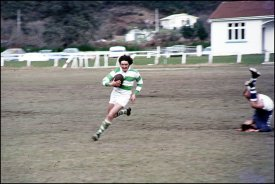

Eastside, Westside or countryside?
In 1975, John Denver released his number one single, “Thank God I’m a Country Boy”. At the time, rural New Zealand rugby players would have been justified in singing along – the code was flourishing in the back blocks, and being a farmer wasn’t a hindrance to one’s career. Plenty of hicks were making the All Blacks. But this is 2007, and things are different. The fact remains: these days you have a far greater chance of making it to the top level playing town rugby than country rugby. Sad but true.
Famous All Black sides like the 1905 “Originals” and the “Invincibles” of the 1930s contained a good proportion of farmers. This was still the case for the great All Black sides of later decades, right up until the ’80s. Take some of the big names in New Zealand rugby folklore: Colin “Pine Tree” Meads hailed from Te Kuiti in the heart of the King Country and was a member of the Waitete Rugby Football Club from ’54 to ’75; “The Boot”, a.k.a. Don Clarke, played his club rugby in a small Waikato settlement called Kereone.
But current All Black stars play their club rugby in the city. Jerry Collins, Richie McCaw, Joe Rokocoko, Dan Carter – they all belong to town clubs.
The explanation for this transformation lies in the way players gain selection for the All Blacks. Fifty years ago you could be picked for a provincial side like King Country straight out of club rugby, and the next step was the All Blacks. Pretty simple: club, province, country. Jump forward to 2006 and the process has become slightly more complicated. Now you are selected from club rugby to play provincial rugby, but that could be first, second or third division NPC. And if you want to take the step up to Super 14 you’d better be playing for a first division side. Once you’ve been picked for Super 14 you have a chance to be chosen for the All Blacks. Club, province, Super 14, All Blacks.
Anyone notice the difference? That’s right, Super 14. And it’s the result of something that happened in the mid-’90s: professionalism. The game changed forever when the almighty dollar began running New Zealand rugby, and the effects are intriguing.
Put simply, the opportunities now lie in the city, not the country. “Most All Blacks are in Super 14 franchises with urban bases – country players go to those urban centres,” says Brent Anderson, NZRU Community Rugby Manager. If you want to get noticed you have to be playing for a top team, and top teams are based in the city.
But should it come as a surprise for a professional to have to move to the city to further his career? Not at all. The drift is there in all professions. Doctors, lawyers, accountants and the rest all have to move to the city if they want to make it to the big time.
It’s not only a result of professionalism but also a symptom of societal change in New Zealand. Statistics New Zealand claims that between 1881 and 2001 the population of urban New Zealand “increased by over 1,500 percent, compared with an increase in rural areas of 83 percent.”1 There are now more than six times as many people living in the city than in the country, so even in terms of raw numbers, it’s no surprise that fewer All Blacks are coming from country clubs.
Nevertheless, the NZRFU does appear to be providing equal opportunities for all players. The funding is the same across the board, with the union paying for things like club liaison officers, administrative support, training assistance and liability insurance for both town and country clubs alike. That much is comforting.
But the fact remains: country players (like Dan Carter from Southbridge) are being forced to leave the country and play their rugby in the city. And so are coaches. Anderson cites coach Colin Cooper as an example. He moved from Clifton to Taranaki to the Wellington Hurricanes and is now coaching the Junior All Blacks.
As long as New Zealand rugby remains professional, there will always be a rural-to-urban drift. It’s a shame, but it’s part of playing sport in the twenty-first century.
Tim Sterne was born in Manukau City (pop. 330,000).
Footnotes
[1] Statistics New Zealand: An Urban/Rural Profile – Historical Context.